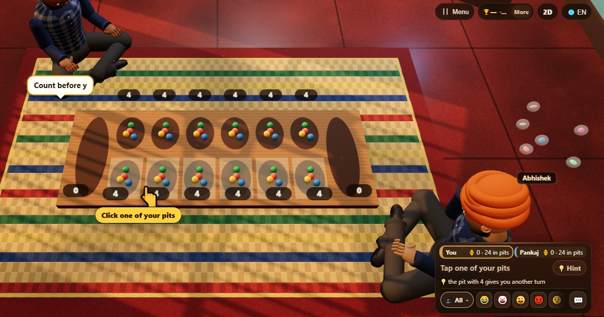

マンカラ (Mancala)
- 👥 2 人
- ボードゲーム
- 🆓
日本語ガイド
種をまいて盤をまわり、相手の種を取って自分の倉を満たそう。
English name: Mancala

遊び方
- それぞれ手前に6つの穴と、右端に1つの倉があります。種が入っている自分の穴をタップします。
- その穴の種を全部、反時計回りに次の穴へ1粒ずつまいていきます。自分の倉には1粒入れ、相手の倉は飛ばします。
- 最後の1粒が自分の倉に入ったら、もう1回です。
- 最後の1粒が自分側の空の穴に入り、向かいの穴に種があれば、その種を全部と自分の1粒をもらえます。
- 片方の種がなくなったら、もう片方は自分側に残った種をもらいます。
得点
倉の種1粒につき1点です。
勝ち方
倉の種がいちばん多い人の勝ち。同じ数なら引き分けです。
よくある質問
種はいくつありますか？
48個です。12の穴に4個ずつです。
マンカラの遊び方はこれだけですか？
いいえ。伝統的な遊び方は何百もあり、カラハもその1つです。これは最もよく遊ばれているものの1つです。
遊び方
- ゲストで: 登録もログインもなし。名前を選んですぐに遊べます。
- コンピューターと: 誰もいなくても、空いた席にはコンピューターが座ります。かんたん・ふつう・むずかしいから選べます。
- オンラインで: 世界中のプレイヤーがいる公開テーブルに参加できます。
- 近くの友だちと: 1台のスマホでゲームを始めてコードかQRコードを共有。友だちは自分のスマホで参加します。
- 1台のスマホで: 順番にスマホを回せば、家族みんなで1台で遊べます。
ほかの言語
- हिन्दी: मनकला
- Hinglish: Mancala
- Español: Mancala
- Português: Mancala
- Français: Mancala (awalé)
- Deutsch: Mancala
- Bahasa Indonesia: Congklak (Mancala)
- Türkçe: Mangala
- Italiano: Mancala
- 한국어: 만칼라
- 中文: 播棋（曼卡拉）
- Русский: Манкала
- اردو: منکالا
- नेपाली: मन्काला
- বাংলা: মানকালা
- English: Mancala · 詳しいルール（英語）
すべてのゲーム


ChitPlay では本物のお金、賭け、賞品は一切ありません。ポイントに価値はありません。